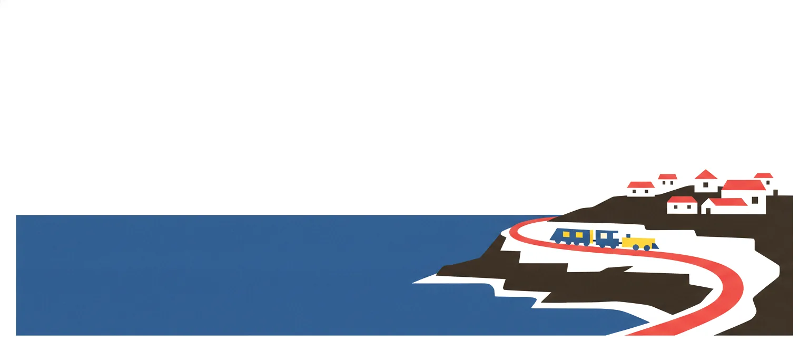
Ein Schreibtisch über dem Meer. Drei Monate lang.
Meine möblierte Wohnung in Joppolo, Kalabrien, mit Bahnhof im Ort und 17 Minuten Zug nach Tropea. {{ site.data.inhalt.miete }} Euro im Monat, warm. Internet aus der SIM-Karte, Strand aus Felsen, im Winter Gasheizung.
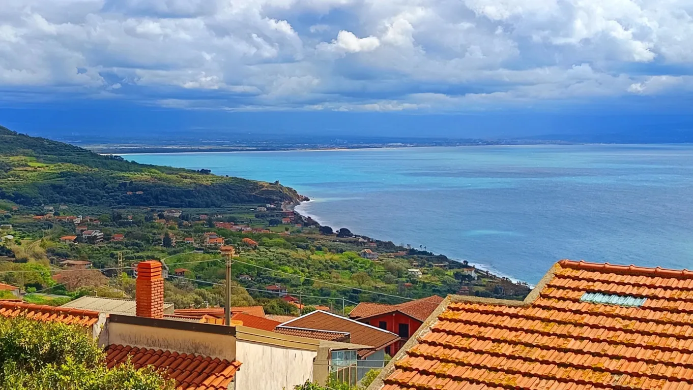
Für wen das passt. Und für wen nicht.
Passt
- Du bleibst drei Monate am Stück.
- Selbstständig, im Sabbatical, für eine Auszeit, einen Italienischkurs in Tropea oder zum Überwintern in Süditalien.
- Du arbeitest am Schreibtisch.
- Homeoffice oder Workation mit Blick aufs Meer, über den Hotspot deines Handys, mit italienischer SIM-Karte.
- Du organisierst deinen Alltag selbst.
- Einkaufen, Kochen, Putzen, Wäsche. Es gibt keinen Service, dafür diesen Preis.
- Du gehst zu Fuß.
- Gassen, Treppen, 100 Höhenmeter zum Bahnhof, 160 zum Wasser.
- Du magst ein Dorf.
- Hier grüßt man sich auf der Straße. Im Winter haben eine Bar, ein Supermarkt und ein Restaurant auf.
Passt nicht
- Du brauchst Sandstrand vor der Tür.
- Hier liegen Felsbrocken. Sand gibt es am Capo Vaticano, eine Bahnstation weiter.
- Du brauchst eine Klimaanlage.
- Es gibt Deckenventilatoren. Im Juli und August ist es heiß und schwül.
- Du brauchst Nachtleben oder Coworking.
- In Joppolo gibt es beides nicht. Tropea hat Bars, Reggio ist eine Stadt.
- Du reist mit zwei Rollkoffern.
- Vom Bahnhof geht es 15 bis 20 Minuten bergauf, am Ende über Stufen. Ein Rucksack ist leichter.
- Du brauchst es barrierefrei.
- Die Wohnung liegt im Borgo, über Stufen.
50 Quadratmeter, hohe Räume, zwei Fenster zum Meer.
Das Loft ist die untere Ebene meines Hauses im Borgo von Joppolo. Zwei Zimmer, eine voll ausgestattete Küche mit Küchenblock und Spülmaschine, ein Bad mit Wanne und Dusche, Waschmaschine. Einfach möbliert, Bettwäsche und Handtücher sind da. Du brauchst also nicht viel Gepäck.
Beide Fenster gehen nach Süden, aufs Meer: Am einen steht der Schreibtisch, das andere hat die Küche. Die Wohnung ist ideal für eine Person, zu zweit geht es auch. Vor der Tür liegt die Gasse, die Traversa di Largo Lanzari, früher Via Borgo, mit einem Tisch, zwei Stühlen und meinen Blumentöpfen; bei Sonne spannst du einen provisorischen Sonnenschutz über die Gasse. Mein Lieblingsplatz ist die oberste Stufe der Eingangstreppe. Von der Fußmatte aus sieht man aufs Meer und auf die Nachbarhäuser.
Oben, in der Bellevue mit der Dachterrasse, an der Via Roma 3, wohnen meine Freunde, mal drei Tage, mal drei Wochen. Unten wohnst du. Die Bellevue (60 m² plus 70 m² Terrasse) vermiete ich auch monatsweise, sie ist aber selten mehrere Monate am Stück frei.
Ein paar Dinge vorab. Das Loft ist das Erdgeschoss, es wird viel gelüftet. Heizung und die drei Kilowatt Strom teilst du dir mit den Freunden oben. Die Kirche über dem Haus hat Lautsprecher, sonntags hört man die Messe bis in die Küche. Und wenn das Leitungswasser mal ausfällt, gibt es den Tank auf dem Dach.
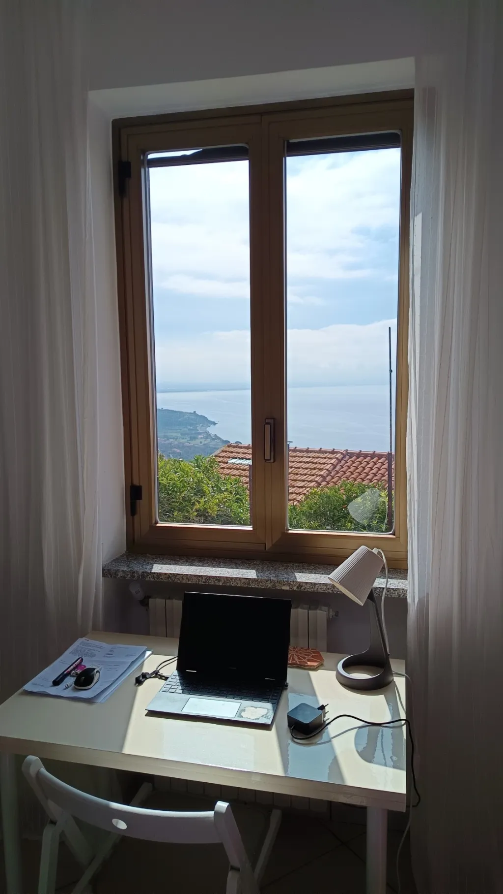
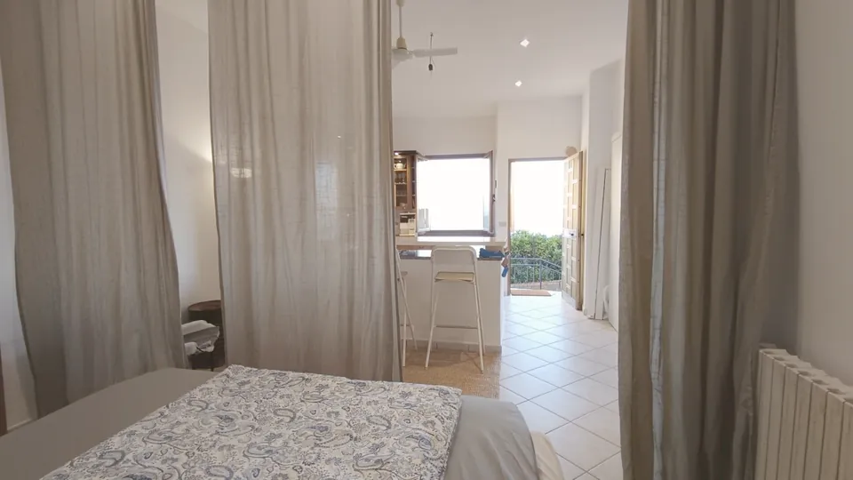
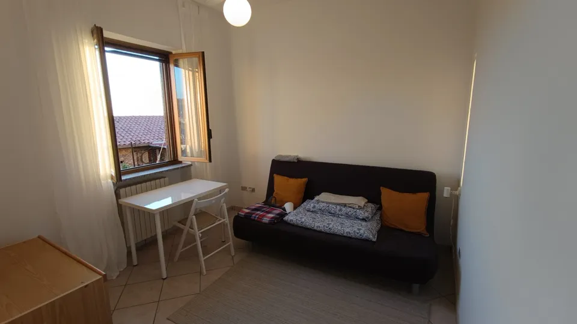
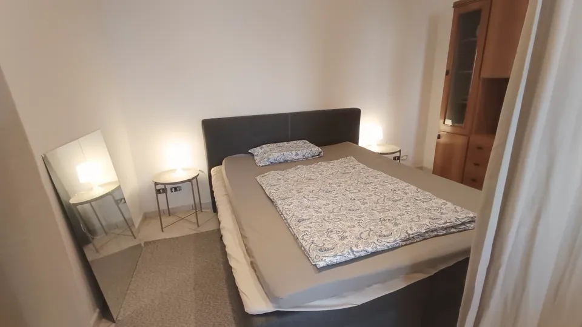
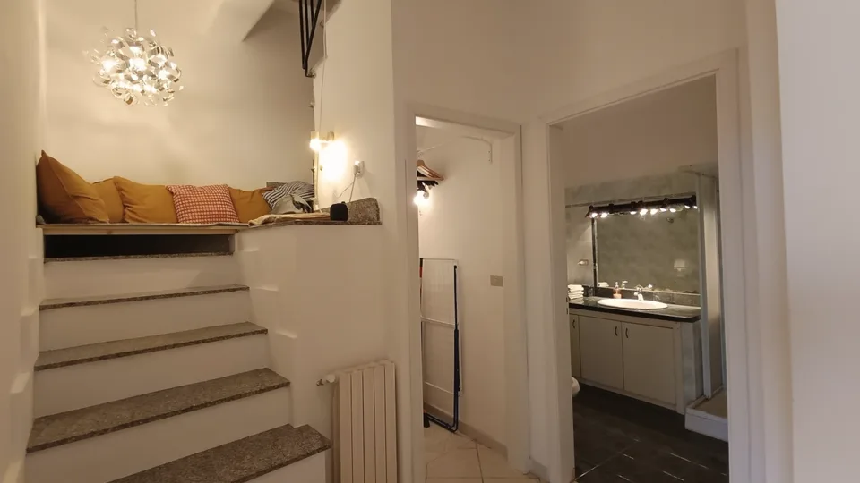
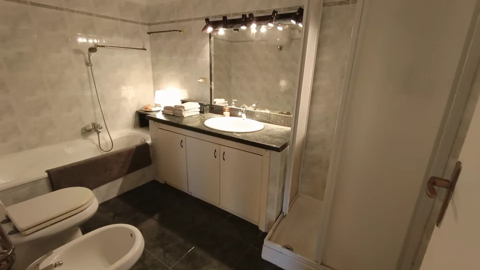
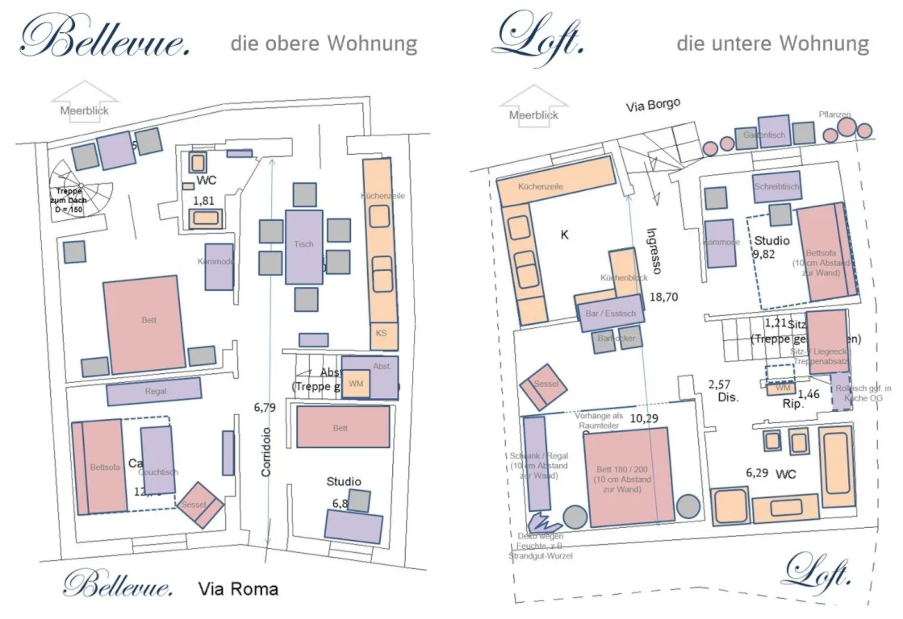
{{ site.data.inhalt.miete }} Euro im Monat, warm.
In der Pauschale sind alle laufenden Kosten drin, Gas und Strom eingeschlossen. Wenn du deutlich mehr verbrauchst als üblich, zahlst du den Unterschied; die Grenze steht im Vertrag. Nicht drin: die italienische SIM-Karte.
Drei Monate aufwärts, Beginn und Ende frei wählbar, angebrochene Monate anteilig. Kürzer geht nach Absprache. Eine Endreinigung gibt es nicht: Du putzt am Ende selbst, oder ich lasse putzen, das kostet 100 Euro. Der Mietvertrag ist eine Seite lang, die Kaution ist zugleich die Anzahlung.
- Miete, warm
- {{ site.data.inhalt.miete }} € im Monat
- Kaution
- {{ site.data.inhalt.kaution }} €, zugleich Anzahlung
- Mindestdauer
- drei Monate, Beginn und Ende frei
- Personen
- eine oder zwei
- Endreinigung
- keine, du putzt selbst
- Storno
- gestaffelt, steht im Vertrag
Arbeiten hier: Hotspot, SIM-Karte, drei Kilowatt.
Ein WLAN gibt es nicht. Ich arbeite über den Hotspot meines Handys: 5G und Hotspot funktionieren wunderbar, ich habe so schon lange Videokonferenzen gemacht und Filme gesehen.
Joppolo hat flächendeckend 4G und teilweise 5G. Was du brauchst, ist eine italienische SIM-Karte: 250 bis 440 Gigabyte kosten 9 bis 14 Euro im Monat, Läden gibt es in Tropea und am Bahnhof Rosarno. Dein deutscher Vertrag reicht für Mails und einen Film, für drei Monate Videocalls reicht das EU-Datenvolumen nicht.
Router und Festnetz gibt es nicht. Einen Speedtest aus dem Loft schicke ich dir auf Anfrage.
- Netz
- 4G überall im Ort, 5G teilweise
- SIM
- 250 bis 440 GB für 9 bis 14 € im Monat
- Strom
- 3 kW fürs ganze Haus, geteilt mit oben. Laptop und Licht egal, Waschmaschine und Wasserkocher nicht gleichzeitig
- Wärme
- kleine Gasheizung über beide Etagen; an feuchten Tagen trage ich auch drinnen eine Jacke
- Kühle
- Deckenventilatoren, keine Klimaanlage
- Platz
- Schreibtisch am Fenster mit zwei Stühlen, zweites Fenster am Küchenblock
Das Dorf im Jahr.
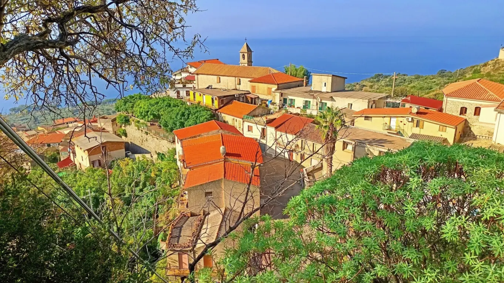
In Joppolo wohnen 1.711 Leute, ein Drittel davon über 65. Den Bahnhof gibt es seit 1893, den Ort seit etwa 1300. Er liegt 177 Meter über dem Meer am Hang des Monte Poro, am südlichen Ende der Costa degli Dei zwischen Capo Vaticano und Nicotera. Die Altstadt heißt Borgo.
Die Bauruinen sind Rohbauten aus den Achtzigern, gebaut für Kinder, die längst nach Norden gezogen sind. Den Müll trennt das Dorf an der Haustür, jeden Morgen etwas anderes. Was in der Landschaft liegt, sammle ich beim Wandern ein, eine Tüte ist immer dabei.
Der Blick. Vom Haus aus der Golf von Gioia Tauro, der Sandstrand von Nicotera Marina, die Kräne des Containerhafens, dahinter das Aspromonte, fast 2.000 Meter. Durch die Straße von Messina sieht man den 232 Meter hohen Strommast von Torre Faro, bei klarer Sicht dahinter den Ätna, rund 120 Kilometer entfernt. Im Westen die Liparischen Inseln. Den Stromboli siehst du vom Lungomare; von Juni bis August geht die Sonne hinter ihm unter.
„Achtung, Kalabrien ist nicht die Toskana. Hier ein bisschen Erwartungsmanagement: Leider muss man in und um Joppolo immer wieder mit Müllablagerungen, Bauruinen und desolater Infrastruktur klarkommen.“Aus meinem Leitfaden für Gäste
Ein Dienstag im Februar.
Gegen sieben wird es hell. Der Zug nach Tropea fährt um 6:19 und dann etwa alle zwei Stunden; ich fahre nicht, ich sitze bis eins am Schreibtisch. Dann 300 Meter bergab zum Supermarkt mit der Käsetheke und bergauf zurück, das ist der Sport. Nachmittags 14 Grad und Sonne, oder Regen, im Februar an etwa elf Tagen. Gegen halb sechs geht die Sonne unter, eine Viertelstunde später als in Berlin; dafür ist es morgens eine halbe Stunde früher hell. Abends die Bar-Trattoria neben dem Rathaus, Il Ritrovo, die hat das ganze Jahr auf, außer zwischen eins und zwei. Manchmal ein Konzert in der alten Polizeiwache. Sonntags Markt in Nicotera, von sieben bis zwei.
Ein Dienstag im Juni.
Um halb sechs hell, bis acht Uhr abends. 24 Grad, das Wasser 23. Morgens Schreibtisch, mittags über den Lungomare zu den Felsen, mit Badeschuhen ins Wasser. Der Strand ist aus Felsbrocken, im Juni ist kaum jemand drauf. Abends auf der Gasse vor der Tür oder mit dem Zug nach Tropea, 17 Minuten. Die Zwiebelernte läuft, der Pecorino vom Monte Poro ist frisch. Im Juli und August wird es heiß und schwül, an Hitzetagen um die 35 Grad; dann laufen die Deckenventilatoren, eine Klimaanlage gibt es nicht.
Winter in Kalabrien, und der Rest des Jahres.
| Monat | Tag °C | Nacht °C | Regentage | Wasser °C | Tageslicht |
|---|---|---|---|---|---|
| Januar | 14 | 9 | 11 | 16 | 9,8 h |
| Februar | 14 | 8 | 11 | 15 | 10,8 h |
| März | 15 | 10 | 10 | 15 | 12,0 h |
| April | 17 | 12 | 8 | 16 | 13,3 h |
| Mai | 21 | 15 | 6 | 19 | 14,3 h |
| Juni | 24 | 19 | 3 | 23 | 14,8 h |
| Juli | 27 | 21 | 3 | 26 | 14,5 h |
| August | 27 | 22 | 4 | 27 | 13,6 h |
| September | 25 | 19 | 8 | 25 | 12,4 h |
| Oktober | 22 | 16 | 10 | 23 | 11,1 h |
| November | 18 | 13 | 12 | 20 | 10,1 h |
| Dezember | 15 | 10 | 13 | 17 | 9,5 h |
Typische Werte für die Küste bei Tropea, zehn Kilometer nördlich, keine Messung aus Joppolo. Leer und mit Badewasser über 20 Grad: Juni und September bis Oktober. April, Mai und November sind genauso leer, das Wasser ist dann kalt.
Von Dezember bis Februar ist es tagsüber so warm wie in Berlin im April, und die Lokale am Lungomare sind zu. Ab April wird es grün und still, ab Juni warm genug fürs Wasser, im Juli und August heiß. Im Oktober hat das Wasser noch 23 Grad, dann kommt der Regen.
Was im Winter offen hat: die Bar neben dem Rathaus, der Supermarkt, das Restaurant beim Bahnhof, dazu Tropea und Reggio mit ihrer Gastronomie das ganze Jahr. Was es im Sommer gibt: die Sagre am Lungomare, San Sisto am 6. August, die ’Nduja-Sagra in Spilinga am 8., und mehr Leute als sonst, aber keine Massen; dafür sorgt der Felsbrockenstrand.
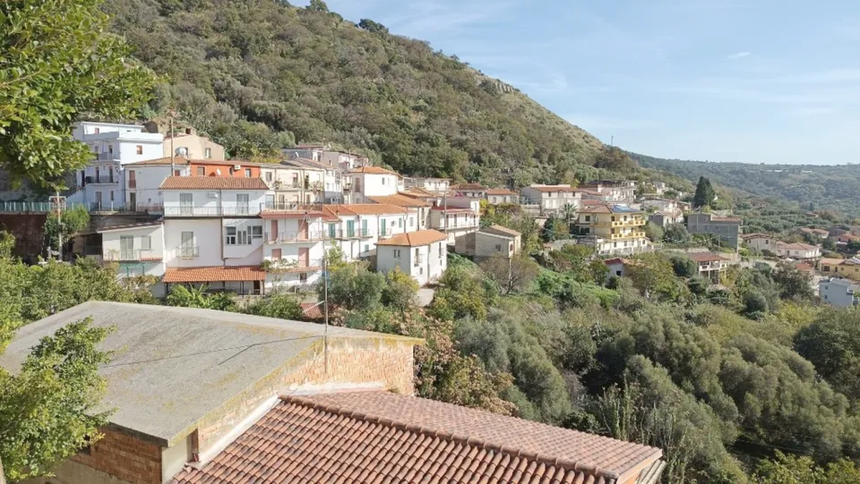
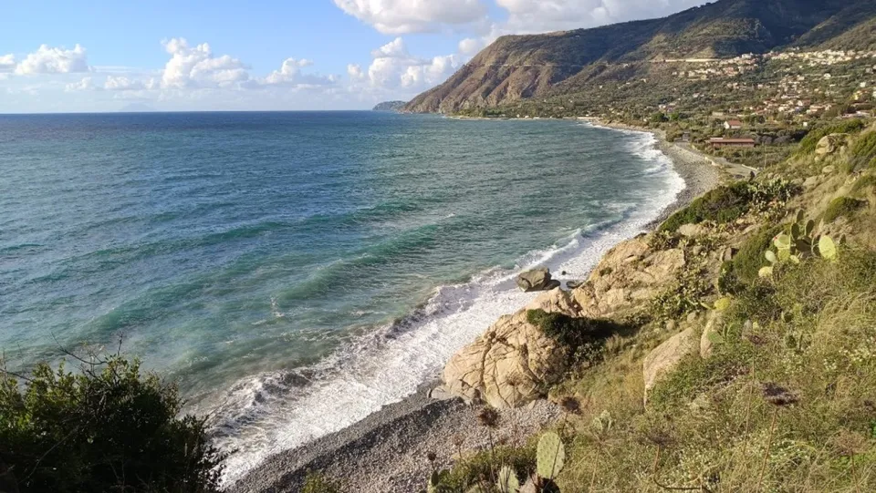
Wandern, direkt vom Haus.
In und um Joppolo kann man schön wandern, in Kalabrien in Küstennähe eher eine Seltenheit. Der ausgeschilderte Weg Mare e Monti führt fast am Haus vorbei vom Lungomare über Caroniti auf den Monte Poro, 5 Kilometer und 800 Höhenmeter. Dazu meine Runden, Stand {{ site.data.inhalt.stand }}:
Rund um Joppolo
- Panoramarunde über Caroniti
- Zur Spiaggia Spelonga
- Zu den Felsen unterhalb des Torre
- Parallel zur Straße Richtung Nicotera
- Höhenweg nach Commercioni
- Zum Strand von Coccorino, mit Abstecher zur Spiaggia Tirijiu
Lange Touren bis zum nächsten Bahnhof
Hin zu Fuß, zurück mit dem Zug.
- Zum Strand Grotticelle am Capo Vaticano, Bahnhof Ricadi
- Über den Berg nach Ricadi und San Nicolò, Bahnhof Ricadi
- Am Meer entlang nach Nicotera Marina, Bahnhof Nicotera
- Über Caroniti, Comerconi und Caroni nach Nicotera
Die Wege sind teils steil und nicht alle markiert. Feste Schuhe, Wasser, und im Sommer früh los. Eine Karte mit den Routen bekommst du von mir mit dem Mietvertrag.
Hinkommen und zurechtkommen, ohne Auto.
Lageskizze, aus Koordinaten gezeichnet, Entfernungen als Luftlinie. Rot die Küstenbahn.
Der Bahnhof liegt 700 Meter Luftlinie vom Haus, hundert Meter tiefer. Runter sind es 12 bis 15 Minuten, rauf 15 bis 20, über Wege und Treppen. Die Regionalbahn fährt die Küste entlang von Lamezia Terme nach Reggio Calabria, beide mit Flughafen.
Flug. Lamezia Terme hat das ganze Jahr Direktflüge aus Deutschland, im Winter weniger; Reggio Calabria nur im Sommer. Welche Airlines gerade fliegen, ändert sich, also aktuell nachsehen. Von beiden Flughäfen fährt ein Bus zum Bahnhof, dann der Zug: aus Lamezia gut eine Stunde, aus Reggio anderthalb; mit Bus und Umsteigen rechne mit zwei.
Zug. Nachtzug München–Rom, dann Frecciarossa oder Italo nach Rosarno, wo einzelne halten, oder nach Lamezia Terme; von Rosarno sind es zwei Stationen Regionalzug. Von Berlin etwa 24 Stunden, oder mit Zwischenstopp in Bologna, Verona, Florenz.
Auto. A2, ab Salerno mautfrei, Abfahrt Rosarno, 16 Kilometer Küstenstraße. Vor Ort brauchst du es nicht.
Züge ab Joppolo. Etwa alle zwei Stunden, 8 bis 13 am Tag je Richtung, der erste um 6:19, der letzte gegen 21 Uhr, sonntags wenige. Tropea 17 Minuten, Rosarno 19, Lamezia eine Stunde, Reggio anderthalb, Villa San Giovanni eine Stunde und von dort 20 Minuten Fähre nach Messina.
Im Ort, zu Fuß. Der Supermarkt Oasi del Fresco mit Käse- und Fleischtheke, 300 Meter bergab. Die Bar-Trattoria Il Ritrovo neben dem Rathaus. Das Restaurant Gio Kraken beim Bahnhof, meist ganzjährig. Apotheke, Post, zwei Tabacchi, Friseur. Trinkwasser aus der Quelle am Platz. Sonntags Markt in Nicotera, 7 bis 14 Uhr. Zu Fuß weiter: der Wanderweg Mare e Monti vom Lungomare über Caroniti auf den Monte Poro, 5 Kilometer, 800 Höhenmeter.
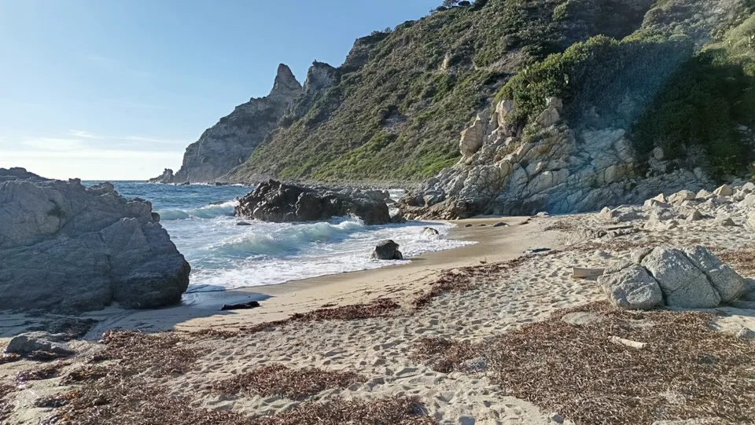
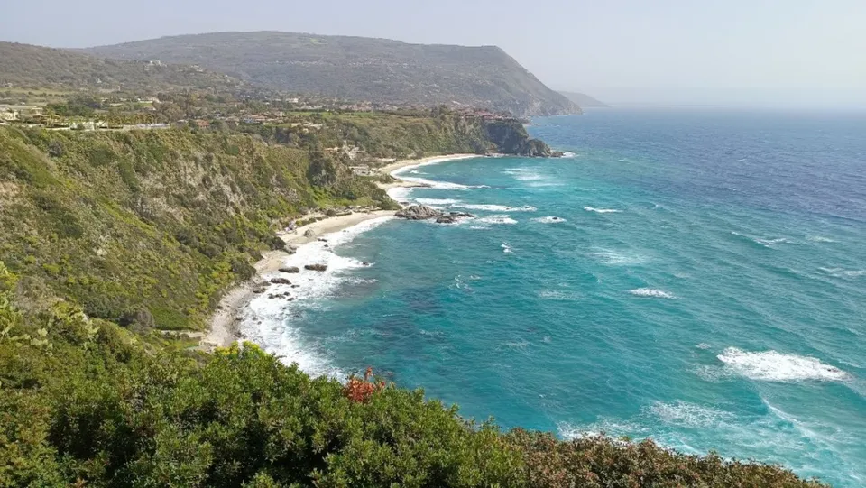
Woher das kommt.
Ich bin Tim, Architekt und Stadtplaner aus Berlin. 2024 habe ich in Joppolo ein Stadthaus mit zwei kleinen Wohnungen gekauft und in zwei Jahren renoviert, 2025 das verfallene Dorfhaus nebenan dazu, als Werkstatt und Lager.
Seit einem Jahr kommen Freunde: 33 waren da, 13 mehrfach, zwei haben inzwischen selbst ein Haus im Borgo gekauft. Oben wohnen sie, das Loft unten vermiete ich an Leute, die ich noch nicht kenne. Warum hier? Weil Kalabrien nach langer Zeit wieder aufmacht, und weil ich das hier so sehe:
„Dennoch ist vieles desolat und in die Jahre gekommen, für mich ist es ein riesiger Lost Place mit unglaublichem Potenzial.“Aus meinem Leitfaden für Gäste
Wer gar nicht mehr weg will oder selbst ans Kaufen denkt: Drei Monate Probewohnen sind ein guter Anfang. Über Teileigentum an meinen Häusern denke ich nach, und beim Hauskauf in Joppolo helfe ich gern. {% if site.data.inhalt.video_link and site.data.inhalt.video_link != "" %}Auf YouTube gibt es ein Video vom Loft, gedreht im März 2026.{% endif %}
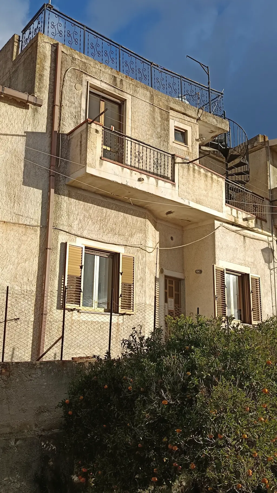
Schreib mir.
Eine Mail reicht: wann, wie lange, was du vorhast, ob ihr zu zweit kommt. Ich antworte selbst. Frei ist das Loft von {{ site.data.inhalt.frei_de }}, andere Zeiten auf Anfrage.
Tim Lehmann
{{ site.data.inhalt.mail }}
{{ site.data.inhalt.telefon }}
Casa Joppolo, Via Roma 3, 89863 Joppolo (VV), Italien. Auf Google Maps zeigen. Das Loft hat seinen Eingang auf der Rückseite, Traversa di Largo Lanzari 11.
Das Loft steht auch auf WG-gesucht, falls du lieber dort schreibst.
{% endif %}